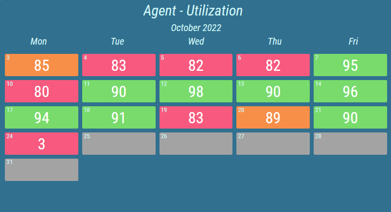
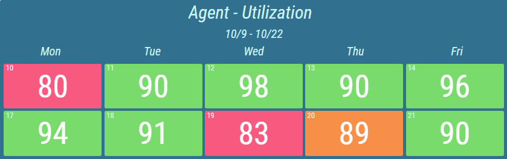
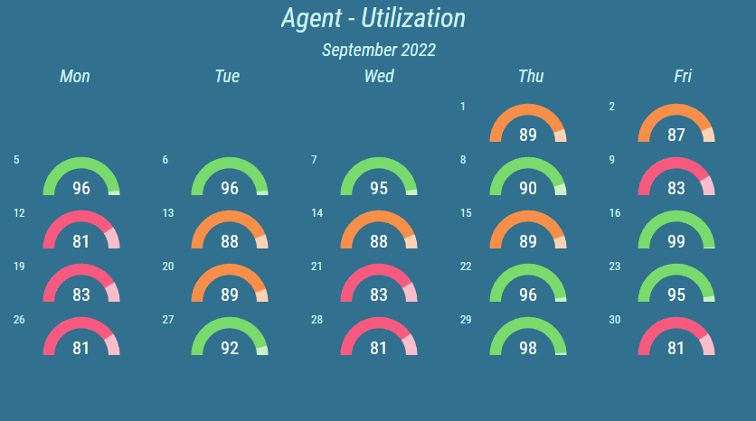
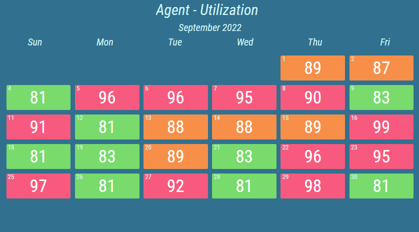

Calendar¶
The Calendar is used to give a brief overview of a specific statistic over a period of time. The user can easily see when the requirements for a specific day were not met, or highlight exceptional results.
A Calendar displays results of a specific calculation over the course of a configured period. A week or month period can be displayed. Furthermore several such periods can be displayed at once.
Figure 1: Calendar with a period of one month.
Figure 2: Calendar with period of two weeks.
Each day of the period is represented by a colored tile. Conditional styles can be configured, that will be reflected for each day by changing the color or presentation type of the day’s value. Day without a recorded result can also be specifically colored using the conditional style.
Figure 3: Calendar with semi circle presentation type.
For more information about presentation types, see KPI chapter.
Typically, the last tracked result of the day is used to determine the ranges. However, other values can be used, such as first tracked, minimal achieved, maximal achieved or the difference (of last values) with the day before.
Each Calendar can be configured to display specific days of the week. For example days from Monday until Friday plus additional Sunday. Furthermore, the day the week starts with can be changed. For example, week starts with Sunday.
Figure 4: Calendar with additional days
For more information about editing this segment, see Calendar chapter.